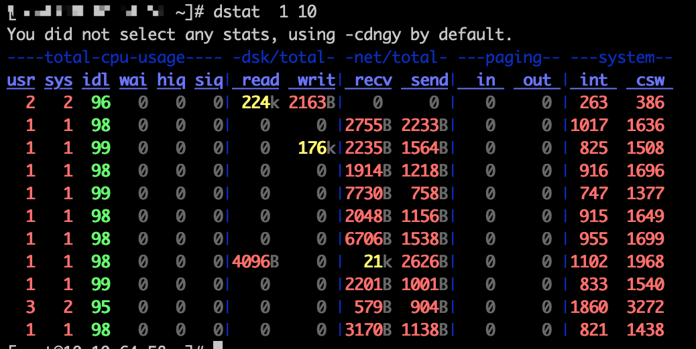
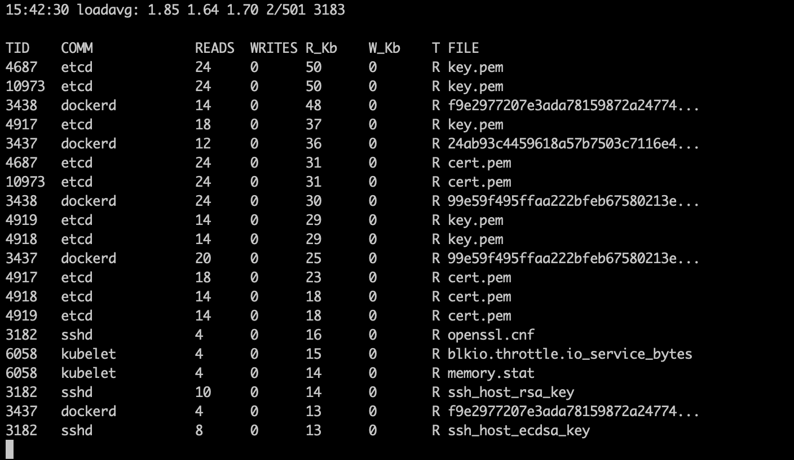

Linux系统的IO状态
dstat查看系统整体IO状态
dstat同时展示CPU、磁盘IO和网络IO的状态，以及系统中断、内存换页和上下文切换数量，用yum直接安装即可：
yum install -y dstat
dstat的运行效果如下，1表示每1秒输出一次，10表示一共输出10组数据：

iostat查看磁盘设备IO状态
iostat呈现的数据来自/proc/diskstats，-d -x 显示所有磁盘的I/O情况。
$ iostat -d -x 1
Device: rrqm/s wrqm/s r/s w/s rkB/s wkB/s avgrq-sz avgqu-sz await r_await w_await svctm %util
vda 0.00 0.01 0.43 0.19 74.76 1.59 243.28 0.06 4.63 1.67 11.27 97.45 6.12
vdb 0.00 0.00 0.72 0.01 146.07 0.19 402.12 0.00 1.43 1.26 11.25 0.15 0.01
Device: rrqm/s wrqm/s r/s w/s rkB/s wkB/s avgrq-sz avgqu-sz await r_await w_await svctm %util
vda 0.00 0.00 1.00 0.00 8.00 0.00 16.00 0.00 4.00 4.00 0.00 4.00 0.40
vdb 0.00 0.00 0.00 0.00 0.00 0.00 0.00 0.00 0.00 0.00 0.00 0.00 0.00
Device: rrqm/s wrqm/s r/s w/s rkB/s wkB/s avgrq-sz avgqu-sz await r_await w_await svctm %util
vda 0.00 0.00 0.00 0.00 0.00 0.00 0.00 0.00 0.00 0.00 0.00 0.00 0.00
vdb 0.00 0.00 0.00 0.00 0.00 0.00 0.00 0.00 0.00 0.00 0.00 0.00 0.00
rrqm/s：每秒合并读请求数
r/s：每秒发送给磁盘的读请求数（合并后）
rkB/s：每秒从磁盘读取的数据量，单位KB
r_await：读响应时间，单位毫秒
wrqm/s： 合并写请求速率
w/s：每秒发送给磁盘的写请求数（合并后）
wkB/s：每秒向磁盘写入的数据量，单位KB
w_await：写响应时间，单位毫秒
avgqu-sz/aqu-sz：平均请求队列长度
svctm： 推断的处理I/O请求需要的平均时间，单位是毫秒
%util：磁盘处理I/O的时间占比，即使用率，使用率100%，说明I/O操作多（不等于磁盘饱和，饱和是不能再接收新的读写)
filetop查看读写频繁的文件
filetop是一个bcc工具箱中的一个工具（bcc系列工具见BCC系列工具），它能够动态展示文件的读写情况，由高到低排序。
在CentOS上用yum安装bcc-tools：
yum install -y bcc-tools。
需要注意的是bcc命令被安装在/usr/share/bcc/tools/目录中，该目录默认不在$PATH中。另外，如果内核版本不支持ebpf，bcc-tools中的有些命令使用的时候会报错。filetop在不支持ebpf的内核上可以工作。
$ /usr/share/bcc/tools/filetop
$ /usr/share/bcc/tools/filetop -C # 刷新数据前不清除屏幕，这样可以看到变化情况

opensnoop跟踪系统调用open
opensnoop也是bcc工具箱中的一个，用来跟踪系统调用open，显示被打开的文件：

iotop查看进程I/O排行
iotop动态显示每个线程的IO操作情况，由高到底排序：
Total DISK READ : 0.00 B/s | Total DISK WRITE : 11.28 K/s
Actual DISK READ: 0.00 B/s | Actual DISK WRITE: 0.00 B/s
TID PRIO USER DISK READ DISK WRITE SWAPIN IO> COMMAND
329 be/4 nobody 0.00 B/s 3.76 K/s 0.00 % 0.00 % nginx: worker process
446 be/4 root 0.00 B/s 7.52 K/s 0.00 % 0.00 % systemd-journald
12800 be/4 root 0.00 B/s 0.00 B/s 0.00 % 0.00 % dockerd
1 be/4 root 0.00 B/s 0.00 B/s 0.00 % 0.00 % systemd --switched-root --system --deserialize 21
2 be/4 root 0.00 B/s 0.00 B/s 0.00 % 0.00 % [kthreadd]
3 be/0 root 0.00 B/s 0.00 B/s 0.00 % 0.00 % [rcu_gp]
pidstat查看进程的I/O状态
pidstat，-d表示展示IO信息，1表示每秒输出一次：
$ pidstat -d 1
13:39:51 UID PID kB_rd/s kB_wr/s kB_ccwr/s iodelay Command
13:39:52 102 916 0.00 4.00 0.00 0 rsyslogd
每秒读 每秒写 每秒取消的写 I/O延迟
单位KB 单位KB 单位KB 单位时钟周期
如果要查看具体某个进程，使用-p指定进程号，下面间隔 1 秒输出 3 组数据：
$ pidstat -d -p 4344 1 3
06:38:50 UID PID kB_rd/s kB_wr/s kB_ccwr/s iodelay Command
06:38:51 0 4344 0.00 0.00 0.00 0 app
06:38:52 0 4344 0.00 0.00 0.00 0 app
06:38:53 0 4344 0.00 0.00 0.00 0 app